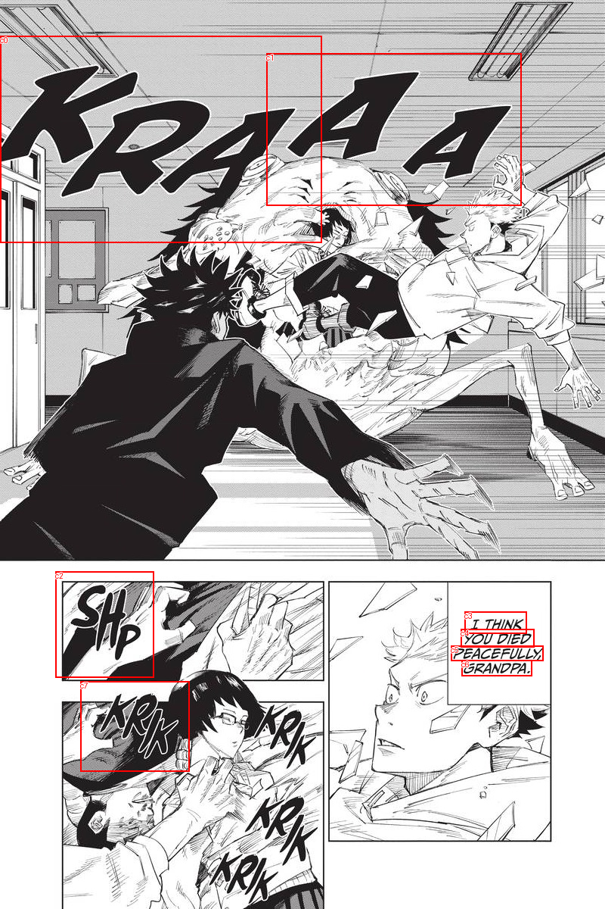
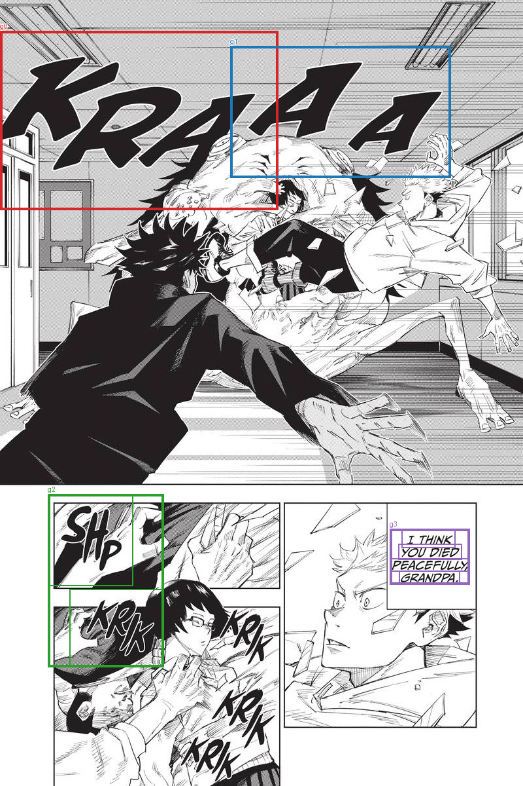

Saved TextExtractionPipeline groups, already filtered and joined. No OCR, filtering, or joining is run by diagnostics. References are comparison only; order is spatial.
Transcript TXT · All candidates and results JSON
KRA AA SHp CRIK I THINK YOU DIED PEACEFULLY, GRANDPA.


| Group | OCR IDs | Joined text | Target index | Reference text | Similarity |
|---|---|---|---|---|---|
| g0 | c0 | KRA | |||
| g1 | c1 | AA | |||
| g2 | c2, c7 | SHp CRIK | |||
| g3 | c3, c4, c5, c6 | I THINK YOU DIED PEACEFULLY, GRANDPA. | 0 | I THINK YOU DIED PEACEFULLY, GRANDPA. | 1.0 |
[]
[]
[]
[
{
"id": "c0",
"text": "KRA",
"score": 0.9995233416557312,
"box": [
0.0,
47.0,
425.0,
320.0
]
},
{
"id": "c1",
"text": "AA",
"score": 0.9916418790817261,
"box": [
352.0,
70.0,
689.0,
271.0
]
},
{
"id": "c2",
"text": "SHp",
"score": 0.9332497119903564,
"box": [
73.0,
754.0,
203.0,
894.0
]
},
{
"id": "c3",
"text": "I THINK",
"score": 0.9993070960044861,
"box": [
614.0,
807.0,
696.0,
836.0
]
},
{
"id": "c4",
"text": "YOU DIED",
"score": 0.9976324439048767,
"box": [
609.0,
830.0,
706.0,
854.0
]
},
{
"id": "c5",
"text": "PEACEFULLY,",
"score": 0.9644607901573181,
"box": [
596.0,
852.0,
718.0,
872.0
]
},
{
"id": "c6",
"text": "GRANDPA.",
"score": 0.9999257922172546,
"box": [
610.0,
871.0,
703.0,
892.0
]
},
{
"id": "c7",
"text": "CRIK",
"score": 0.8359163403511047,
"box": [
106.0,
899.0,
250.0,
1018.0
]
}
]